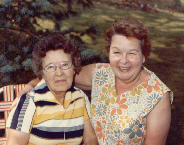

Charlotte Hart
19?? - ?
Charlotte Long was the only child of Omega and Ed Long. She married her second cousin, Jack Wheeler, and together they had a daughter. Later she married Jack Hart.

Charlotte with her aunt Mayme.
Parents:
Florence Omega Revis
1903 - 19??
Ed Long ???? - ????
Offspring:
Dorothy Evelyn Wheeler
19?? - ?
References:
1. Mary Dell Wogsland
2. Neal Wogsland
Last altered on 10 July 2004 by
Bradley James Wogsland
.